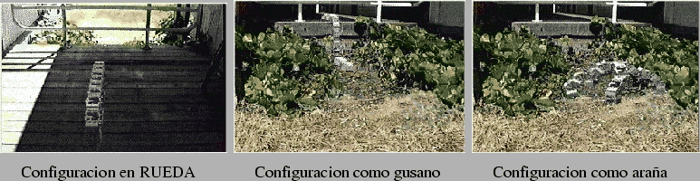

Mark Yim, en su tesis[15], construyó y diseñó el robot Polypod[16][17] para estudiar cuánto de versatil puede llegar a ser un sistema basado en robótica modular reconfigurable, restringido al ámbito de la locomoción estáticamente estable.
El escenario que consideró fue el siguiente, mostrado en la figura
![[*]](crossref.png) . En la foto de la izquierda Polypod
está atravesando el suelo de madera de un porche, para lo que utiliza
un movimiento tipo rueda (loop), caracterizado por su eficiencia.
Al llegar al final, se transforma en un gusano, moviéndose mediante
ondas longitudinales (movimiento similar al de las lombrices de tierra),
lo que le permite pasar por debajo de la barandilla y superar el escalón,
llegando a un terreno desigual y con maleza. Aquí se reconfigura en
una araña de 4 patas, cuyo movimiento es más estable.
. En la foto de la izquierda Polypod
está atravesando el suelo de madera de un porche, para lo que utiliza
un movimiento tipo rueda (loop), caracterizado por su eficiencia.
Al llegar al final, se transforma en un gusano, moviéndose mediante
ondas longitudinales (movimiento similar al de las lombrices de tierra),
lo que le permite pasar por debajo de la barandilla y superar el escalón,
llegando a un terreno desigual y con maleza. Aquí se reconfigura en
una araña de 4 patas, cuyo movimiento es más estable.
|
 |
Se trata de un nuevo enfoque al problema de la locomoción. En vez de construir un robot diseñado específicamente para moverse por un terreno, se diseña un robot más versatil capaz de cambiar su forma y la manera de andar.
Aunque Polypod no es autoreconfigurable, sí demuestra la viabilidad de este tipo de robots, implementando diferentes patrones de movimiento.